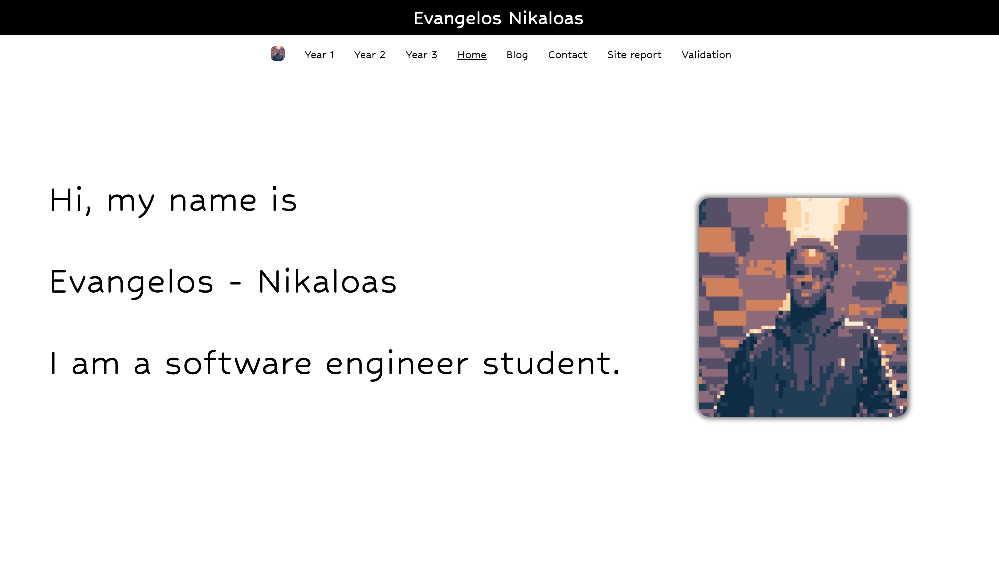

Blog
Hello and welcome to my blog. I have been learning to programming for a just under a year now and it’s a journey I am pleased to have started. I began programming learning Java with Codecademy and initially found it challenging with the verbose syntax that Java can sometimes possess. Looking back, it would have been more beneficial to begin with Python which was easier to understand as a beginner. Nevertheless, the knowledge I acquired in Java helped achieve an A+ within my first semester at university so the work had all been worth it. During the summer I also introduced myself into Python & C working on Harvard CS50 program. This went over some of the fundamentals of programming and helped provide a foundation of knowledge for me.
My projects:

A website created for an artist / friend of mine.I used the skills I learned from my first semester in my CSY1018 class using CSS and HTML.
A program which takes a users input and will convert that amount into the desired currency. I created this using Java.

Here is the code used to produce this very website which is an assignement of creating a personal portfolio through the use of HTML & CSS
